Watch this quick 2-minute demonstration to see all features in action.
Follow these quick steps to find your watchlist icon, pin it to Chrome, and control the sidepanel seamlessly.
Keep the extension always visible in your browser toolbar for fast 1-click access from any tab.
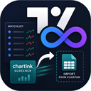
In the top-right corner of Google Chrome, click the puzzle piece icon (🧩) next to your profile avatar.
Scroll down the dropdown list to locate our extension with the icon shown above.
Click the pushpin icon so it turns blue. The extension icon will now remain permanently docked on your Chrome toolbar!
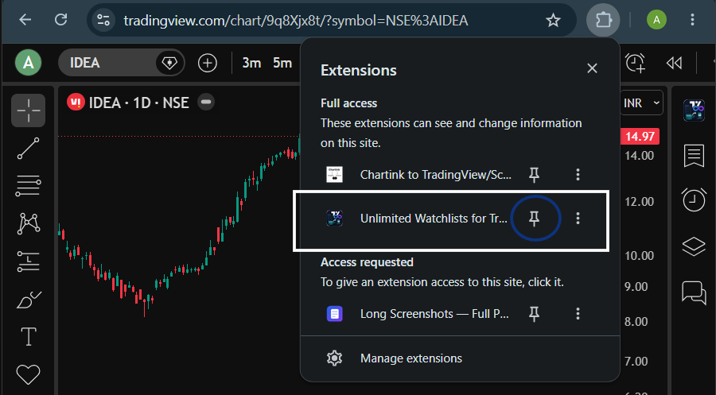
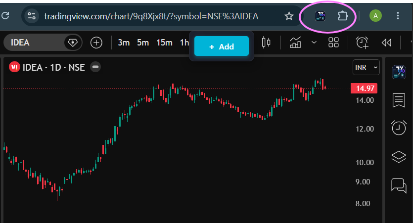
Locate the dedicated watchlist icon integrated directly into the TradingView chart interface.
Go to tradingview.com/chart/ with any stock or index loaded.
On the right edge of the chart where TradingView places its tool buttons, look at the very first button at the top.
You will see our distinct infinity symbol icon positioned right above TradingView's default buttons. It is always there whenever you are on a chart!
Effortlessly dock, resize, and hide the sidepanel without obstructing your charts.
Click the Watchlist Icon on TradingView's right toolbar (or click the pinned Chrome extension icon). The sidepanel smoothly docks to the right.
Click the close button (×) located in the top-right corner of the sidepanel header, or click the toolbar toggle button again.
The TradingView chart automatically shifts and shrinks to accommodate the panel—no overlapping, and no hidden price candles or indicators!
Hover over the left divider line between the chart and the panel. Click and drag left or right to set your preferred width (from 140px up to 70% of your screen). Your size is saved automatically!
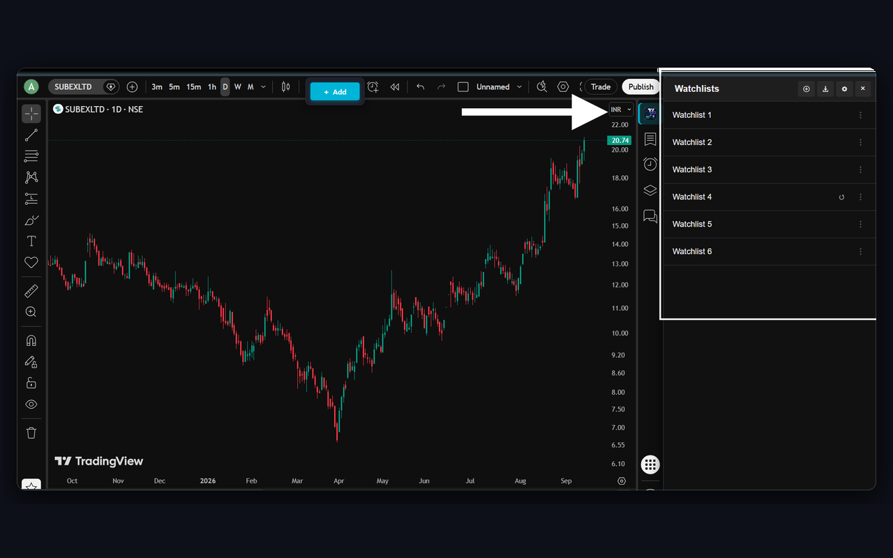
TradingView free caps you at one 30-item watchlist. With this extension, build as many watchlists as your trading strategy requires.
Create separate lists for breakout setups, long-term investments, indices, and swing trades with zero limits.
In the top-right header of your Watchlist panel, click the (+) create icon (highlighted by the white arrow in the screenshot).
Type any title such as "Swing Setups", "Nifty 50", or "Crypto High-Caps" and press Enter.
TradingView free locks you to just 1 list with 30 symbols. Here you can create 5, 20, 50, or 100+ watchlists completely free!
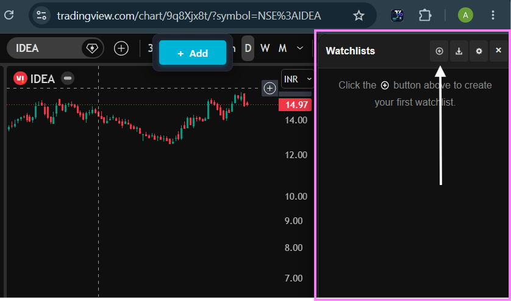
Organize and control your trading lists with intuitive management actions.

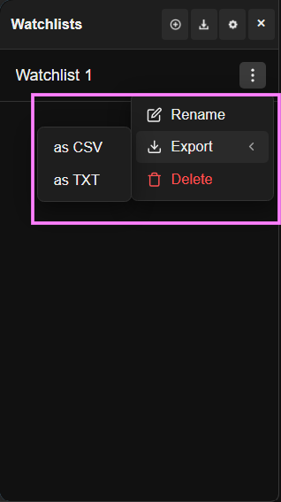
Click the ⋮ icon on the right side of any watchlist row to open its action menu.
Click Rename to adjust your list title whenever your strategy evolves.
Hover over Export and choose as CSV or as TXT to instantly save or share your symbols.
Drag any watchlist card up or down to place your most important lists right at the top of your workspace.
Click Delete in red to safely remove watchlists you no longer need.
Five powerful ways to populate your watchlists in seconds without manual typing.
The killer feature for Indian market traders: import entire screener results in one click.

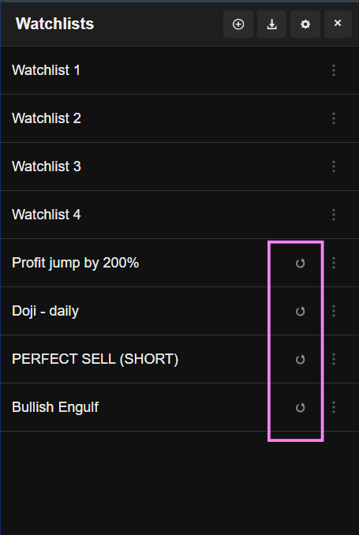
Navigate to any scanner on chartink.com/screener/ (e.g. Breakout scans, Volume surges, 15m RSI).
Look at the buttons right above the stocks table (next to Copy, CSV, Excel). Our extension injects the Import to Watchlist button!
Every single stock from all pages is automatically extracted and saved into a new watchlist titled with the screener's name!
Chartink watchlists remember their scan link! Click the Re-sync icon anytime to update the list with today's fresh scan results.
Click the download/import icon in the top header of the Watchlist panel (highlighted with pink arrow). A dropdown opens with three instant options:
When studying any chart on TradingView, click the floating + Add button on the top toolbar. A popup opens allowing you to check which watchlists should include this stock!
Need to share your symbols with a friend or backup a scan? Use the 3-dot menu to download a clean CSV or TXT file in one click.
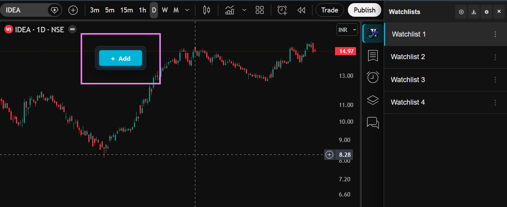
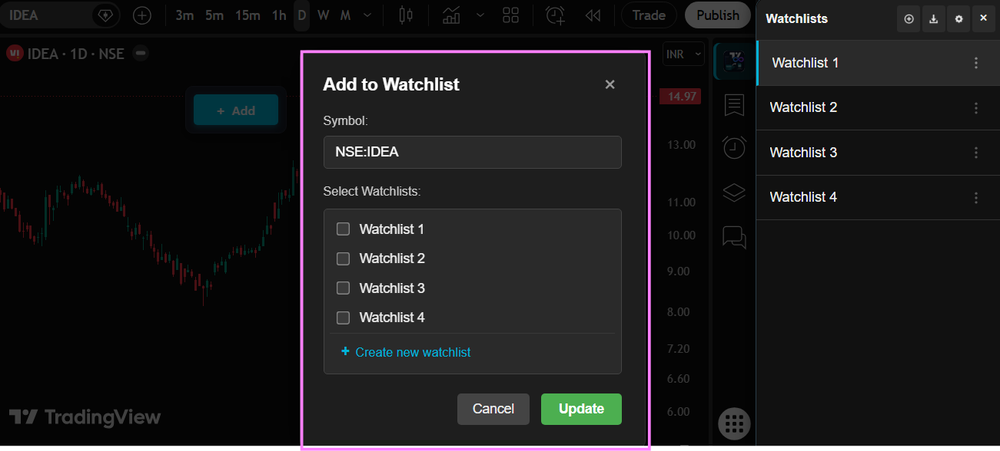
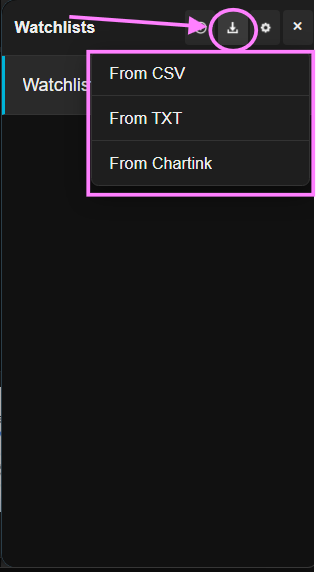
Speed through 50+ charts per minute with zero lag and native keyboard shortcuts.
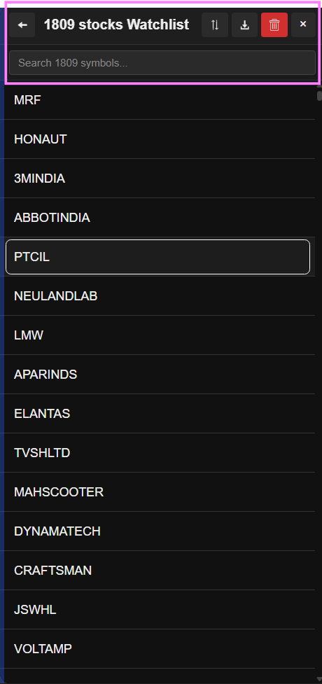

While viewing your TradingView chart, simply press the Space bar. The chart instantly switches to the next ticker in your active watchlist!
Click any stock in the list. TradingView immediately switches the chart via our seamless symbol bridge—zero page reloads, keeping all your drawing tools and indicators intact.
Filter through lists containing hundreds of stocks by typing into the search bar at the top of the watchlist.
Click the Sort button in the watchlist header to instantly order tickers alphabetically.
Visually flag breakout candidates, trade setups, and record quick price levels.
Simply right-click on any ticker symbol in your watchlist (like PTCIL in the screenshot) to reveal the tagging & notes popup menu.
Choose from 6 high-contrast dots to visually categorize your setups:
Type key price triggers or trade catalysts like "Breakout > 450", "Earnings 18th", or "200 EMA Retest" and click Save. The note appears right next to the ticker!
Click Clear All to remove color dots and text notes, or click the trash icon () to delete that symbol from the list.
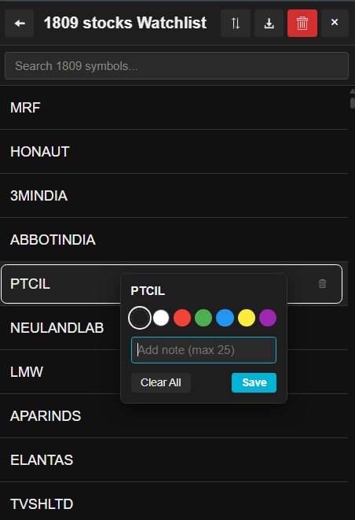
Personalize your theme, set your default exchange, and safeguard your data locally.
Click the gear icon (⚙) in the top-right header of your Watchlist panel to access configuration options.
Switch between dark mode and clean light mode to perfectly match your TradingView chart theme.
Set your default exchange (e.g. NSE, BSE, NASDAQ, NYSE, LSE, BINANCE). When you enter or import tickers without a prefix, they automatically route to your selected exchange.
Click Backup All Data to download a complete `.json` backup file containing all your watchlists, stock symbols, color tags, and custom notes.
Switching computers, clearing browser cache, or re-installing Chrome? Click Restore Data to restore your entire watchlist library in seconds.
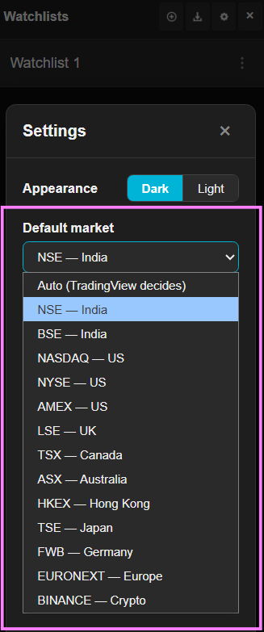

Bookmark these handy shortcuts to save time while analyzing charts:
| Action | Shortcut / Gesture | Description |
|---|---|---|
| Cycle Next Stock | Space | Jumps to next symbol in active watchlist on TradingView chart |
| Switch Chart Symbol | Left Click | Instant zero-reload chart switch to clicked stock |
| Tag Color / Add Note | Right Click | Opens stock tagging color picker and note field |
| Resize Sidepanel | Drag Divider | Drag the left border line to adjust width (140px – 70%) |
| Reorder Lists | Drag & Drop | Drag watchlist cards up or down to set custom priority |
| Close Panel | × Close | Click the close button at top right of the panel header |